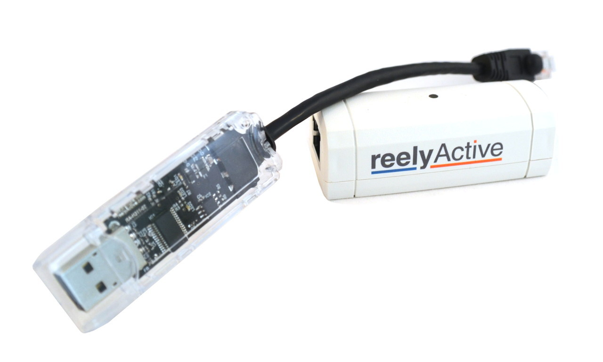
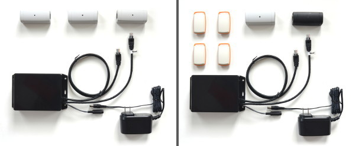
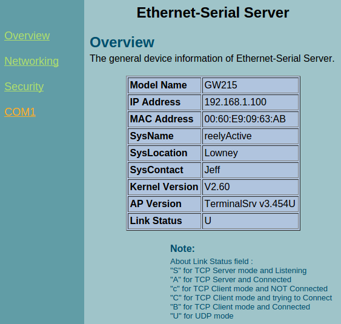
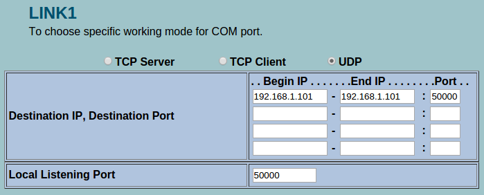
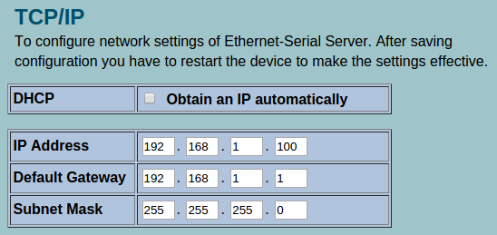

Install a Starter Kit
Here we'll present how to install a starter kit. At the end of this tutorial you'll have a stream of sensor data arriving at your PC/server ready to be processed by any of our open source software. Select your starter kit and follow the instructions below:
You should have in front of you the following kit:
Installing Node.js
If you don't already have Node.js installed, be sure to do so first! Installation is easy on all platforms.
Connect the Reelceiver
Plug the reelceiver into the hub so that the Hub → arrow points towards the hub. Note that the reelceiver will still power on if it's connected in the wrong orientation, but it will not communicate with the hub.
Connect the Hub to your PC/server
Plug the other end of the hub into a free USB port on your PC or server. The reelceiver should power on as indicated by its blinking LED.
Install serialport
In order to listen for the serial data stream, we'll first need to install the serialport package for Node.js. Create a new directory called hello-barnowl, then from that directory run:
npm install serialport
If you experience any problems with the latter, consult the serialport package documentation for specific instructions.
Run barnowl
Here we'll run barnowl, our open source middleware package which listens for the data stream, processes it and outputs the result.

In the hello-barnowl directory run:
npm install barnowl
then create a file called hello-barnowl.js and paste in the following code:
var barnowl = require('barnowl');
var middleware = new barnowl();
middleware.bind({ protocol: 'serial',
path: 'auto' }); // See notes below
middleware.on('visibilityEvent', function(data) {
console.log(data);
});
Now simply run:
node hello-barnowl.js
and, all going well, the path to your USB Hub will be auto-detected and data will be output to the console. These are radio transmissions being captured by the reelceivers. It works!
The next section explains how to set the exact path to your USB Hub which is necessary if auto-detection doesn't work.
Determine the path to your USB serial port
Even if auto-detection fails, all of the candidate paths to the USB Hub should nonetheless be listed in the console output. For example you might see:
- Auto serial path: '/dev/ttyUSB0' was selected
- Alternate serial path: '/dev/ttyUSB1' is a FTDI device.
In this case, edit hello-barnowl.js and specify the alternate path '/dev/ttyUSB1' in place of 'auto' and run again. Repeat for all alternates until it works.
If that still doesn't work, in the hello-barnowl directory, create a file called serial-list.js and paste in the following code:
var serialPort = require('serialport');
serialPort.list(function (err, ports) {
ports.forEach(function(port) {
console.log('path: ' + port.comName);
console.log('id: ' + port.pnpId);
});
});
Now run:
node serial-list.js
In the output you should see one or more devices listed. We're interested in the one which has FTDI_USB-RS422_Cable in its id. For instance, on Linux you might see the following:
path: /dev/ttyUSB0 id: usb-FTDI_USB-RS422_Cable_FTVVPHTW-if00-port0
Copy the path (ex: /dev/ttyUSB0 or COM5) into hello-barnowl.js and run it again.
You should have in front of you one of the following kits:
Installing Node.js
If you don't already have Node.js installed, be sure to do so first! Installation is easy on all platforms.
Connect Power
Take the wall adapter provided with your kit and plug it into the mains. If you don't have access to a North American outlet, you'll need an adapter. Don't worry about the voltage, we've provided you with a kick-ass adapter with global compatibility and enough power to drive reely long reels with plenty of reelceivers.
Plug the barrel connector of the wall adapter into the receptacle on the hub (black box). You should hear a faint beeping sound. That's good!
Connect the Reel
Now we can connect the reelceivers in a daisy-chain configuration we call a reel. This is pure plug-n-play simplicity, just take into account the following:
- The reelceivers are directional, make sure that the little arrow on the back that says "Towards Hub" points towards the hub!
- The order in which reelceivers are connected is not important: you can mix Bluetooth Smart and 915MHz reelceivers in any combination - just respect the directionality!
- Reelceivers don't communicate via Ethernet, even if they use the same Cat5 cables as Ethernet. Be sure to plug them into the cable coming out of the hub that is marked "Reel".
Daisy chain all of your reelceivers to the hub (you'll need to supply the additional cables, any network cable will do). Each reelceiver's LED should blink if it is receiving power. Good job!
Connect the Hub to your PC/server
Only one cable left unplugged! Now it's time to connect the hub to your PC or server. Simply plug the Ethernet cable of the hub directly to your PC or server.
That was easy! Next up: the joys of IP settings...
Change the IP address of your PC/server
We'll be honest, we wish you didn't have to deal with this step. It's the biggest source of friction in an otherwise relatively frictionless installation. But we'll get through it together. (Ask about our USB hub and other alternatives which eliminate this step!)
We preconfigured the IP settings on your hub and sent you the details which are likely the following:
- Hub IP: 192.168.1.100
- Target IP: 192.168.1.101
Now you'll need to change the IP address of your PC/server to match that of the target IP above. If you don't know how to do this, search the Internet for "How to change my IP address in OS" where OS is the name of your operating system. Thanks in advance for your patience and understanding!
We're just one step away from the joy of seeing data streaming to your console!
Run barnowl
At this point, the hardware is actually streaming data to your PC/server and all you need to do is listen for it. Here we'll run barnowl, our open source middleware package which listens for the data stream, processes it and outputs the result.
Create a new directory called hello-barnowl, then from that directory run:
npm install barnowl
In the same directory, create a file called hello-barnowl.js and paste in the following code:
var barnowl = require('barnowl');
var middleware = new barnowl();
middleware.bind({ protocol: 'serial',
path: '192.168.1.101:50000' }); // Server IP address here!!!
middleware.on('visibilityEvent', function(data) {
console.log(data);
});
Now simply run:
node hello-barnowl.js
and you should see data being output to the console. These are radio transmissions being captured by the reelceivers. It works!
Optional: changing the hub IP settings
If you don't like the IP address settings we've provided, you're free to change them. To do so, you'll need to log on to the hub using a web browser and make the changes. Log on to the hub by typing its IP address in your browser, for example: 192.168.1.100
When prompted, enter admin as the username and leave the password field blank. You should see a screen similar to this:
To change the target IP settings, click on COM1 which will provide the following options. Enter in the target IP address(es), you can specify up to four ranges. By default we use port 50000 but you can use any free port. Don't forget to save your configuration!
To change the IP settings of the hub itself, click on Networking which will provide the following options. Enter in the desired IP settings, or select DHCP mode if the hub will be connected to a network which will provide a dynamic address. Don't forget to save your configuration!
Once you change the IP address of the hub and cycle power, it will use that new address. Note that if the new address is outside of the subnet of the old address, you won't be able to log back on without first changing your PC/server's IP address. Just a heads up!
What's next?
With the hardware in place, you're ready to start exploring the capabilities of the reelyActive platform. Read our Barnowl Baby Steps tutorial to build on what you've already done. Or try making your own Smart Space. Enjoy!